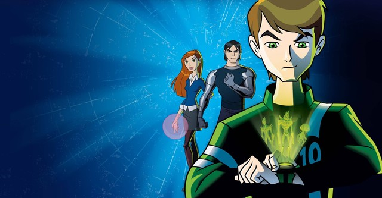

Ben 10 : Alien Force


.Ben 10: Força Alienígena é uma série animada de televisão americana criada pela equipe Man of Action (um grupo formado por Duncan Rouleau , Joe Casey , Joe Kelly e Steven T. Seagle ) e produzida pelo Cartoon Network Studios . [1] Acontece cinco anos depois de Ben 10 e toma um rumo mais sombrio do que seu antecessor.
A série estreou no Cartoon Network nos Estados Unidos em 18 de abril de 2008, e no Teletoon no Canadá em 6 de setembro de 2008, e terminou em 26 de março de 2010. A série foi originalmente produzida sob o título provisório de Ben 10: Hero Generation. . A série durou um total de três temporadas e quarenta e seis episódios, com seu episódio final sendo exibido em 26 de março de 2010.
Foi indicado a quatro prêmios Emmy , ganhando um de Melhor Mixagem de Som - Live Action e Animação. Cinco anos após os acontecimentos da série original, agora com 15 anos de idade, Benjamin Tennyson tem uma vida cotidiana e normal. Depois do fim de suas aventuras, Ben retirou o Omnitrix, cresceu e passou a ser um adolescente confiante; porém, com a desaparição de seu avô, Max Tennyson, Ben resolve utilizar o Omnitrix novamente e embarca em uma busca por Max com a ajuda de sua prima Gwen Tennyson e de seu velho inimigo Kevin Levin. Paralelamente, com a ajuda de descendentes híbridos — metade humano e metade alienígena — de Encanadores — uma organização policial intergalática —, o grupo de Ben precisa impedir os ataques dos DNAliens e de seus mestres, os Soberanos.